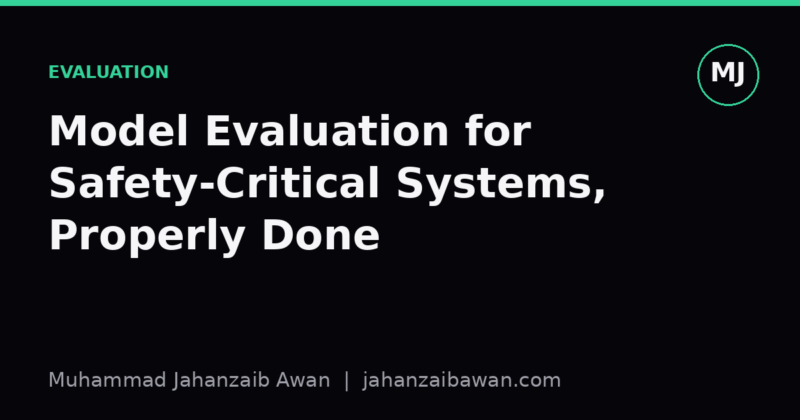

Model Evaluation for Safety-Critical Systems, Properly Done
A single accuracy figure tells you almost nothing about whether a model is safe to deploy. Here is what rigorous threat-aware evaluation actually looks at.

Why a Good Accuracy Score Can Still Mean a Dangerous Model
Suppose a model for detecting a rare equipment fault reports 98% accuracy on a held-out test set. That sounds excellent until you notice the fault occurs in roughly 2% of cases. A model that predicts 'no fault' every single time also scores 98%. It is technically accurate and completely useless, and in a safety-critical setting, actively dangerous, because it will miss every real failure while looking impressive on a dashboard.
This is the core problem with evaluating models destined for safety-critical use: the metrics that are easiest to compute are rarely the ones that matter. Overall accuracy, a single AUC number, or an average error rate can all look reassuring while hiding a model that fails catastrophically in exactly the situations it was built to catch. Threat-aware evaluation exists to close that gap. It asks not 'how often is the model right', but 'under what conditions does it fail, how badly, and could an attacker or an unlucky distribution shift push it there deliberately or accidentally'.
I think of this as the difference between a report card and a stress test. A report card summarises average performance. A stress test tries to find the worst plausible outcome and asks whether the system can tolerate it. Safety-critical deployment needs the stress test, and most of what serious evaluation work checks falls into a small number of recurring categories.
Leakage: The Silent Inflator of Every Metric
The single most common way an evaluation lies to you is data leakage: information from the test set, directly or indirectly, having influenced the training process. This sounds like an obvious mistake to avoid, but it creeps in through subtle channels. If measurements from the same patient, sensor, or vehicle appear in both training and test splits, the model can learn to recognise the specific entity rather than the general pattern, and performance will look far better than it will on a genuinely new entity.
Consider a model that predicts mechanical failure from sensor readings taken every few seconds. If you split rows randomly into train and test sets, adjacent readings from the same failure event will end up on both sides of the split. The model effectively gets to see the answer key smeared across nearly identical rows. A model evaluated this way might report 96% detection accuracy, while a correctly grouped split, where entire failure events are kept wholly in either train or test, might reveal the true figure closer to 78%. That eighteen-point gap is not noise, it is the exact amount by which the naive evaluation was lying.
Threat-aware review checks for this by asking pointed questions: was the split done by group, by time, or by entity, and does that grouping match how the model will actually see new data in production. Time-based splits matter enormously for systems that will be deployed forward in time; if a model trained on 2021 to 2023 data is tested on a random shuffle of the same years rather than validated strictly on 2024 data, you have no real evidence it will handle drift, seasonal change, or new operating conditions.
Subgroup Performance and the Cost of Different Errors
Averages hide variance, and variance is where safety-critical systems get hurt. A diagnostic model with 90% sensitivity overall might have 97% sensitivity on the majority subgroup in the training data and 72% on an underrepresented one. Nobody deploying the model from the top-line number would know that, yet that gap is precisely where harm concentrates, because the people or cases in the weaker subgroup receive systematically worse protection.
Rigorous evaluation therefore disaggregates results: by demographic group where relevant, by equipment type, by geographic region, by rare-but-plausible operating conditions, by anything that plausibly correlates with how the training data was collected. It is not enough to know the model works well on average; you need to know the worst subgroup performance, because that is the performance the least lucky user actually experiences.
Equally important is recognising that not all errors cost the same. In a fault-detection system, a false negative, missing a real fault, might lead to equipment damage or injury, while a false positive merely triggers an unnecessary inspection. These are not symmetric costs, so a single accuracy number that treats both error types equally is the wrong lens entirely. A model tuned to maximise accuracy might sit at a threshold with 85% sensitivity and 99% specificity, while a model deliberately tuned for the actual cost structure of the deployment, accepting more false alarms to catch more true faults, might run at 95% sensitivity and 92% specificity. The second model looks 'worse' by raw accuracy and is almost certainly the one you want to ship. Threat research checks the confusion matrix broken down by error type and cost, not the single scalar that averages them away.
Adversarial and Distributional Stress, and What to Actually Do
Beyond leakage and subgroup gaps, mature evaluation asks what happens when the input is deliberately or accidentally unusual: sensor noise, adversarial perturbations, missing fields, or inputs drawn from a slightly different population than training data. A model can pass every standard test and still degrade sharply under a small, realistic shift, such as a sensor recalibration or a change in upstream data format, that was never represented in the original test set.
The practical takeaway is straightforward, even if it takes discipline to apply. Before trusting any evaluation number for a safety-critical system, ask three questions. First, was the split leakage-free with respect to how the model will actually be deployed, meaning grouped or time-based where appropriate. Second, has performance been broken down by the subgroups and rare conditions that matter, rather than reported only as an average. Third, does the chosen metric reflect the actual cost of each error type, rather than treating a missed fault and a false alarm as equally bad. A model that survives all three checks is not guaranteed to be safe, but a model that has not been put through them has not really been evaluated at all, it has simply been measured.